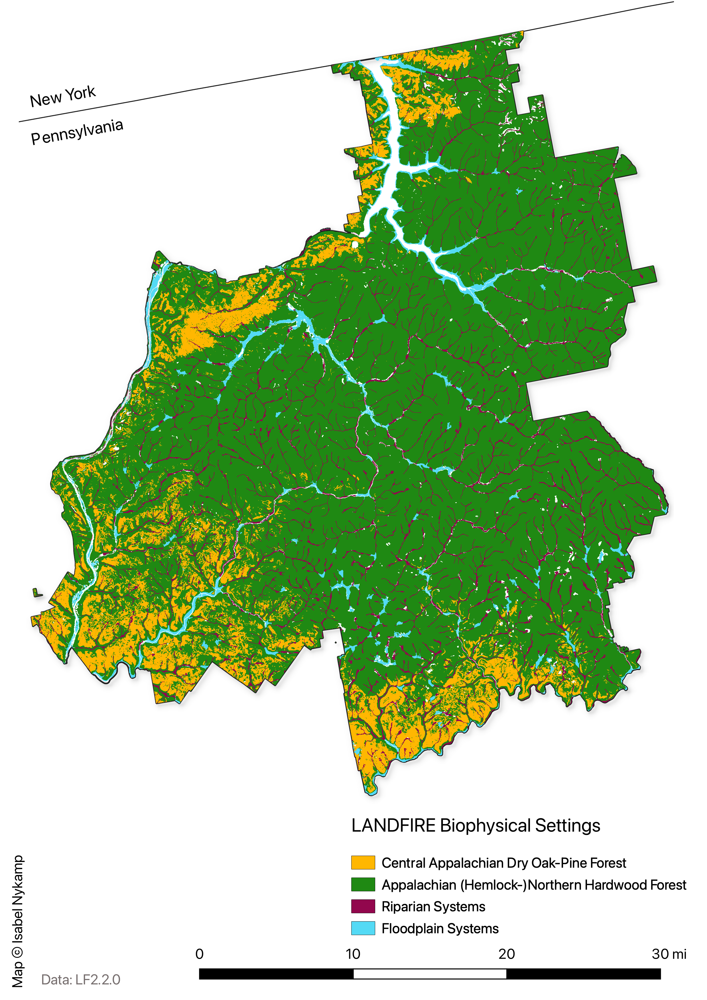

Past: Historical Ecosystems
LANDFIRE’s Biophysical Settings (BpSs)
BpS models represent the vegetation system that may have been dominant on the landscape prior to Euro-American settlement. These models are based on a combination of the current environment and an approximation of the historical disturbance regime. Read more.
Check out this 3-minute tutorial for a quick refresher on the basics of Biophysical Settings Models.
Use this page as a starting point to explore the most prevalent BpSs on the Allegheny National Forest. In addition to the charts and maps, the historical disturbance data can be directly accessed using this site.
Summary
NEED TO FILL IN
Most Prevalent Biophysical Settings

Historic Annual Acres Burned (per ecosystem)

Top Historical Fire Regimes

Historical Disturbances (per ecosystem, 10 most burned BpSs selected)
Data Table
| ZONE | BPS_MODEL | BPS_NAME | GROUPVEG | FRI_REPLAC | FRI_MIXED | FRI_SURFAC | FRG_NEW | ACRES | REL_PERCENT |
|---|---|---|---|---|---|---|---|---|---|
| 63 | 13700_60_63_64_65_66 | Appalachian (Hemlock-)Northern Hardwood Forest | Hardwood | 1,010 | 1,122 | -9,999 | V-B | 573,244 | 77.4 |
| 63 | 13690_60_61_63_64_65_66 | Central Appalachian Dry Oak-Pine Forest | Hardwood-Conifer | 182 | 463 | 15 | I-B | 84,576 | 11.4 |
| 63 | 14720_61_62_63 | Central Interior and Appalachian Riparian Systems | Riparian | 1,001 | -9,999 | 200 | III-B | 45,721 | 6.2 |
| 63 | 14750_41_50_51_63_64_65_66 | Laurentian-Acadian Floodplain Systems | Riparian | -9,999 | 435 | 68 | III-A | 18,857 | 2.5 |
| 0 | 0 | Open Water | Open Water | -9,999 | -9,999 | -9,999 | -9999 | 11,405 | 1.5 |
| 63 | 14790_60_61_63_64_65_66 | Central Interior and Appalachian Swamp Systems | Riparian | 1,011 | -9,999 | 1,353 | V-B | 4,252 | 0.6 |
| 63 | 13210_61_63 | South-Central Interior Mesophytic Forest | Hardwood | 847 | 573 | 102 | III-A | 1,784 | 0.2 |
| 63 | 13020_63 | Laurentian-Acadian Northern Hardwoods Forest | Hardwood | 2,021 | -9,999 | -9,999 | V-B | 890 | 0.1 |
| 63 | 13660_51_63_64_65_66 | Laurentian-Acadian Pine-Hemlock-Hardwood Forest | Hardwood-Conifer | 482 | 998 | 289 | III-B | 27 | 0.0 |
| 63 | 13770_60_61_63_64_65_66 | Central Appalachian Pine-Oak Rocky Woodland | Hardwood-Conifer | 412 | 384 | 4,645 | III-B | 12 | 0.0 |
| 63 | 14770_63_64_65_66 | Boreal Acidic Peatland Systems | Riparian | 935 | -9,999 | 170 | III-B | 105 | 0.0 |